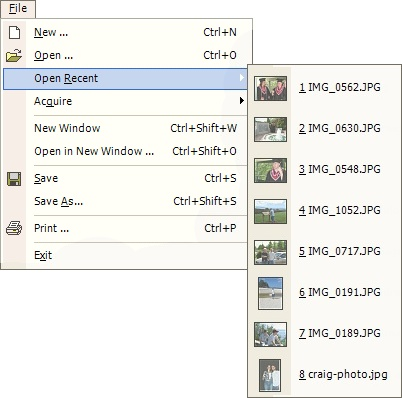

Open Recent

The Open Recent operation (File --> Open Recent) allows quick selection from a list of the last eight recently used files. Thumbnails next to the filename provide a quick preview of each image in the list.